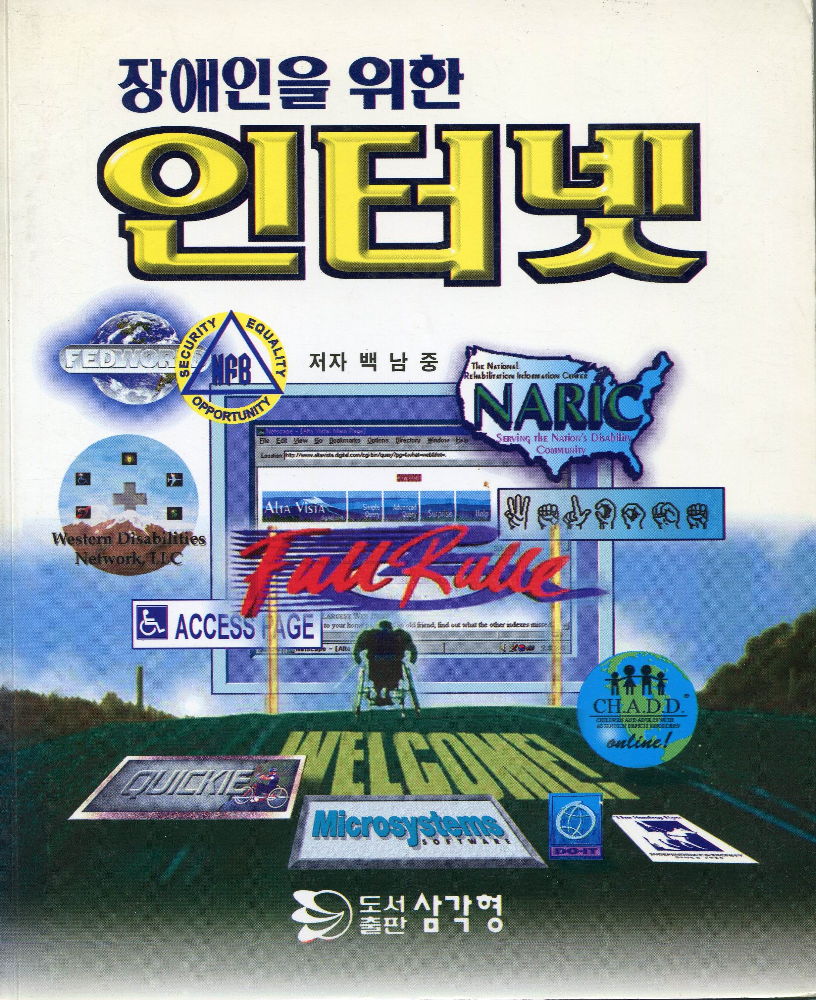

안내
도서 정보

- 초판 발행 1996년 06월 30일
- 저자 백남중
- 발행인 강민구
- 발행한 곳 도서출판 삼각형
- 주소 서울시 광진구 구의1동 251-81 143-201
- 전화 (02)446-0393(대표), 461-9126
- 팩스 (02)446-0392
- 등록 제4-133호
-
값 6000원
-
ⓒ 도서출판 삼각형
- ISBN 89-7467-225-1 93560
본서는 저작권법에 의해 보호를 받습니다. 잘못된 책은 구입처에서 교환해 드립니다.
저자와의 합의 인지생략
옮기며
1996년 도서출판 삼각형에서 출간된 "장애인을 위한 인터넷"을 온라인에서 볼 수 있도록 옮기고 있습니다.
해당 출판사가 없어지면서 판권 또한 소멸한 것으로 확인되어 저작권자이신 백남중 선생님께 별도의 게재 허락을 얻었습니다.
현재 KWAG 회원들이 작업을 준비 중입니다. 함께 하실 도움의 손길을 기다립니다. 참여를 원하시는 분은 @resistan으로 연락 바랍니다.
진행 예정
- 내용, 용어 정리
- 이미지 재처리
- 스타일 작성 및 적용
참고
- 현재 용어와 단순히 표기상의 차이가 있을 경우 현재의 표기를 사용합니다.
- 협의에 따라 용어 사전은 별도로 생성하지 않고, 원문의 찾아보기를 첨부합니다.